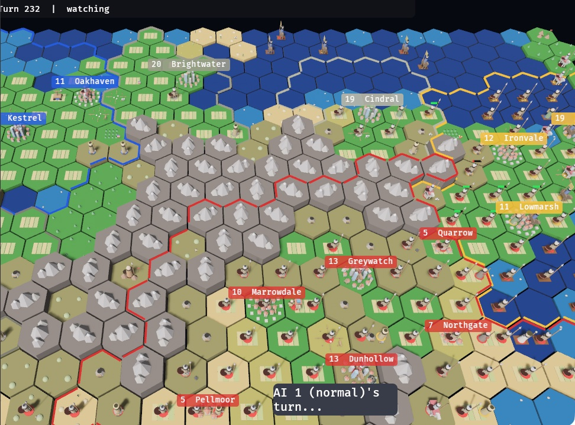
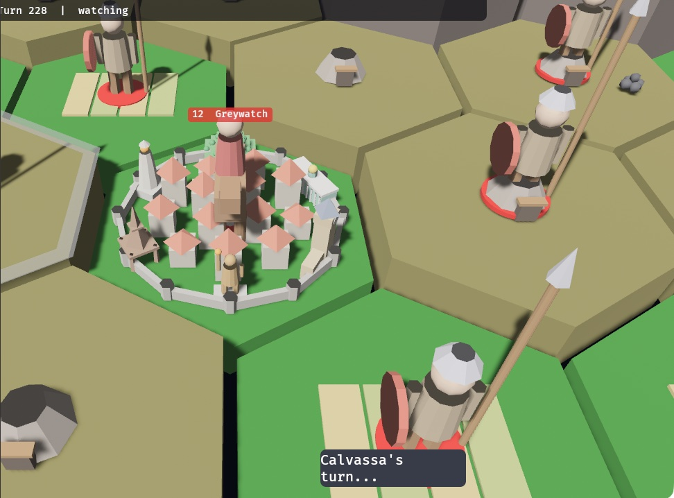
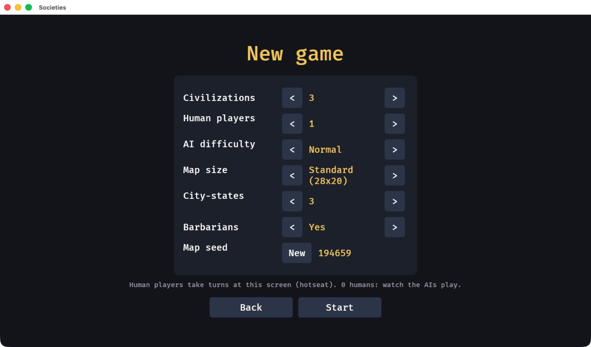
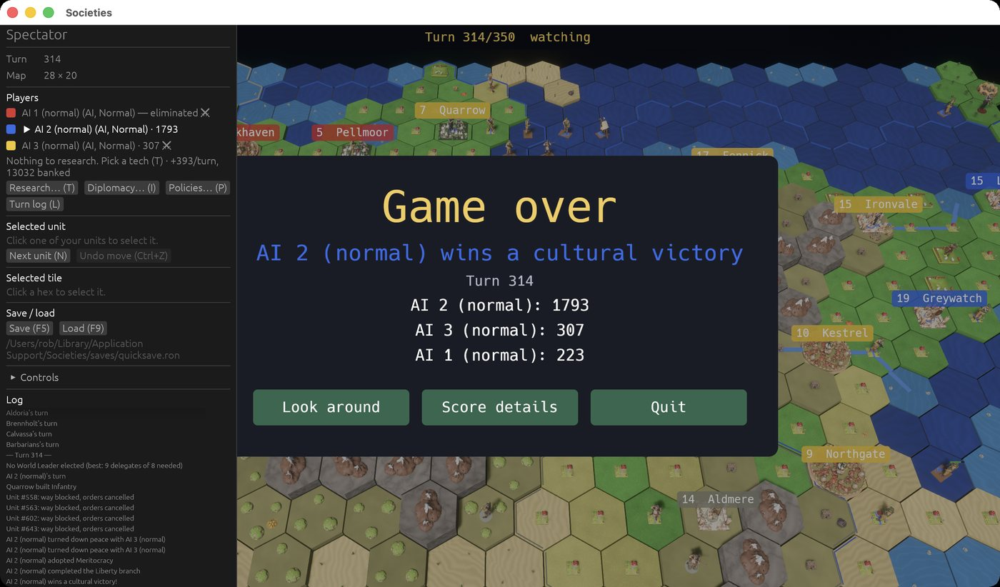

A turn-based strategy game
Lead a people from a single settler to the stars. Explore, found cities, research, trade, pray, negotiate and fight across the ages of a hex-grid world, and win by conquest, science, culture, diplomacy or score.
The world
Where to settle, what to build, which tech to chase, when to make peace. Societies is a complete 4X: the systems you expect from the genre, built from scratch.




Features
Five map types, 7 terrains, 13 resources, and a fog of war that remembers what you last saw.
Work the land, push borders out with culture, and raise 14 buildings, 21 wonders and 5 projects.
52 technologies from Agriculture to Fusion, researched toward any goal you set.
12 unit types. Melee and ranged attacks, flanking, zones of control, embarking, sieges and captures.
9 policy branches, golden ages, luxuries, and an empire that grumbles if it grows too fast.
Scientists, engineers, merchants, artists, generals and prophets. Caravans that bind cities together.
Pantheons, religions founded with your own beliefs, missionaries, and pressure that carries belief from city to city.
City-states to court with gold and quests, barbarians raiding from the wilds, and deals struck between rivals.
Vote resolutions into force with your delegates, and late in the game elect a World Leader.
Against the AI at four difficulty levels, hotseat on one screen, or online with friends.
Every game is a seed plus a list of orders: saves round-trip exactly, and any game can be replayed and verified.
Units, techs, wonders, policies, religions and rules live in plain text files. Edit, restart, play.
Victory
Every game is a race. Pick your road, or switch when a rival pulls ahead.
Be the last civilization standing.
Launch the first spaceship and see it arrive.
Complete 5 social policy branches.
Be elected World Leader with 67% of the delegates.
Hold the highest score at turn 300.
Content
Play
Societies builds from source with stable Rust and runs on macOS, Windows and Linux. With no arguments it opens the main menu; flags start a game directly.
Getting started →cargo run --release # main menu
cargo run --release -- --seed 42 # straight into a game
cargo run --release -- --map-type archipelago
cargo run --release -- --host 7777 --players 3 --ai 1
cargo run --release -- --join HOST:7777 --name AdaUnder the hood
A pure simulation crate with no engine inside, and a Bevy 3D client on top. The same validated orders come from the mouse, the AI and the network.